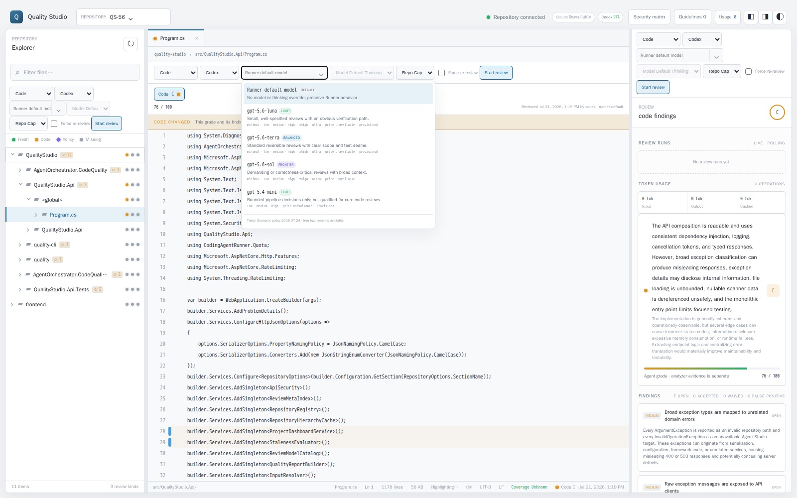
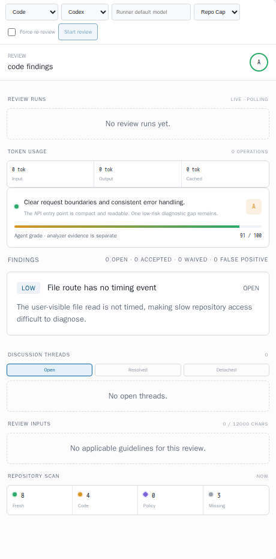
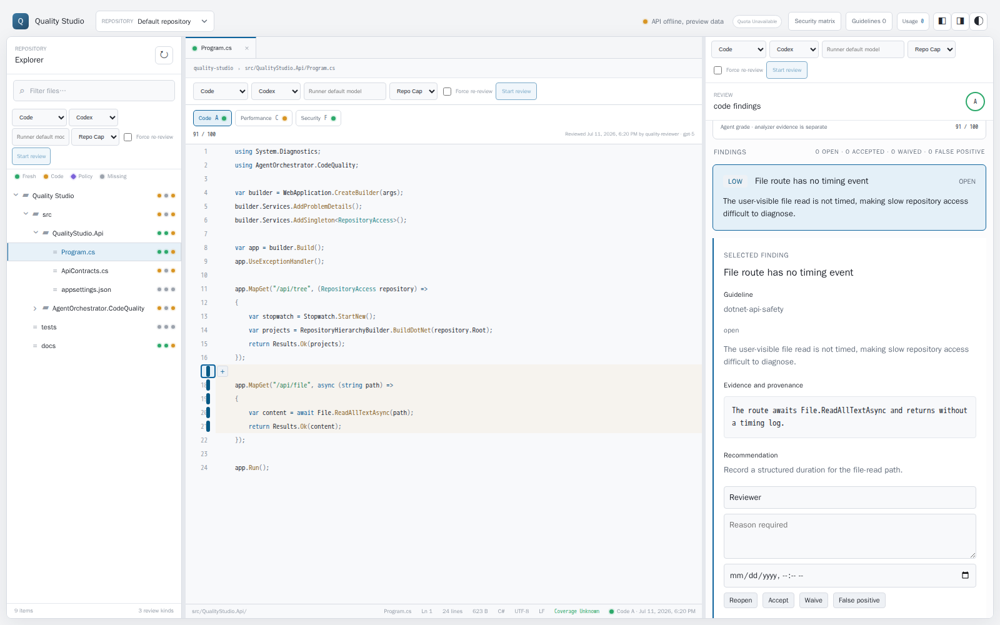
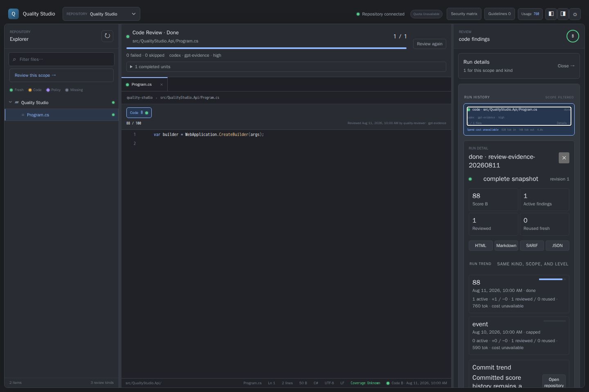
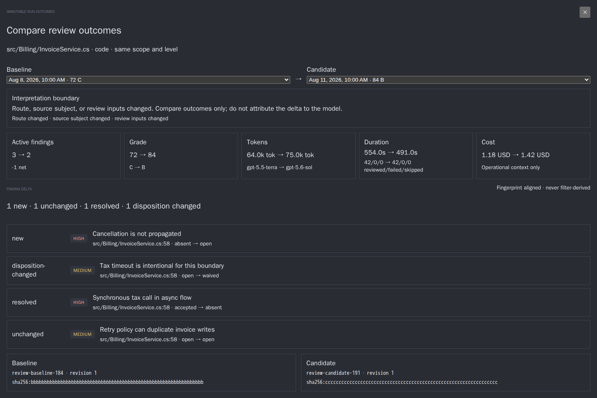

Quality Studio · Operator decision dossier · QS-60
Review flow: from intent to disposition
A repository-grounded walkthrough of starting a review, watching it run, reading and locating findings, taking action, and comparing outcomes. The recommendation turns the existing three-pane engineer workspace into one continuous review session rather than adding another dashboard.
Keep the three-pane workspace. Give each scope one launch point, let the active run occupy that point, make every finding a bidirectional code anchor, present lifecycle actions in operator language, add API-owned management for the existing repository scope list, and persist a compact per-run outcome snapshot for comparison.
01Evidence basis
This dossier reviews the actual implementation and preserved acceptance evidence. QS-55 and QS-56 are not integrated into the checked-out main commit, so their preserved commits are treated as the requested visual baselines and are never represented as current main.
| Source | What it establishes | Provenance |
|---|---|---|
| Current main | Three-pane placement, run polling and response shape, finding selection, lifecycle API, and durable run store. | 3e0b6559 |
| QS-55 findings state | 13 px finding bodies, 14 px card titles, 16 px detail title, audited contrast, and 24 × 22 px code marker hit area. | 0ac0dae8 · mocked preview captures |
| QS-56 picker state | Catalog-backed model combobox, thinking levels, route annotations, model validation, and route fields on runs. | 2b3f31ef · live API captures |
| Product contracts | Three-pane engineer workspace, durable run semantics, lifecycle meaning, and the source-to-detail drill-down requirement. | docs/concept.md · docs/review-runs.md · docs/finding-lifecycle.md |
| Operator design policy | Inline rationale beside controls, continuous progress, evidence one click away, model correctness floors, both themes, and no decorative status rail. | agent-taskboard indexed prompt sources |
Evidence boundary
The QS-56 screenshots used a live Quality Studio API. The QS-55 readability screenshots deliberately aborted API calls and exercised repository-owned preview data; their filenames say --mocked. The run-progress and comparison findings below are code-contract findings, not claims inferred from a staged screenshot.
02Operator walkthrough
| Step | What the operator does today | Where confidence breaks |
|---|---|---|
| 1 · Choose scope | Select a repository node. The same qs-review-actions launcher is then visible in Explorer, the editor header, and the Review pane. | Three equal launch points make the action look global and local at the same time. The scope is encoded in component input, not stated as a single review sentence. |
| 2 · Choose route | QS-56 filters catalog models by CLI, lists capability tier, suitability, thinking levels, price availability, and provisional status. Runner default is first. | The catalog explains models but does not recommend a route for this scope or show the policy floor. The operator still has to translate policy into a choice. |
| 3 · Confirm | POST /review/estimate runs and a native browser confirmation prints files, operations, tokens, cost, cap, and history samples. | The preflight replaces the workbench with an operating-system dialog. It cannot expose assumptions progressively, show the selected scope visually, or link model rationale. |
| 4 · Watch | A run row at the top of the right pane shows state, file counts, a progress bar, spend, route, stop reason, first error, and pause/cancel/resume. | The list is the eight newest repository runs, not the selected scope. It does not show the current file or the supplied files[] transitions. Historical runs compete with findings for the same narrow scroll column. |
| 5 · Read findings | QS-55 provides readable cards, stronger severity contrast, and a selected detail with evidence and recommendation. | The list has no open-only default, sort, or grouping. The detail omits location links and uses a decorative colored left rail that conflicts with the active design hard rule. |
| 6 · Go to code | Clicking a code gutter marker selects its finding. Clicking a finding card selects its detail. | The reverse path stops at selection: the app does not open the location, scroll to its range, focus it, or encode the finding in the URL. Multi-location findings are invisible. |
| 7 · Act | Enter author and reason, optionally an expiry, then choose Reopen, Accept, Waive, or False positive. Create task appears only when handover is configured. | Raw storage vocabulary is exposed. There is no safe operator-level Dismiss choice, action-specific rationale, undo, or repository ignore list. Accept remains active and score-affecting, but the UI does not explain that consequence. |
| 8 · Compare | Read separate run rows and their estimate deviations. | There is no baseline/candidate selection and no historical finding snapshot. A prior sidecar is replaced by the next review, while current result.json contains counts and route data but no grades or findings. |
03Current-state screenshots
{kind=link}

{kind=link}
{kind=link}

{kind=link}
{kind=link}

{kind=link}
Keep the QS-55 readability gains
The audit records 13 px body and evidence text, 14 px card titles, 16 px detail titles, at least 5.02:1 audited body contrast, at least 6.02:1 severity contrast, and a 24 × 22 px marker hit target in both themes. The target flow changes hierarchy and behavior, not those legibility floors.
04Findings with code and data evidence
| Priority | Finding | Repository evidence | Decision consequence |
|---|---|---|---|
| P1 | One intent has three launchers. The operator cannot tell which copy is canonical. | explorer.html:4 · editor.html:26/127 · review-panel.html:2 | Keep one contextual launcher in the center scope header. Replace the right copy with active-run state and leave Explorer with a compact context action only. |
| P1 | The picker informs but does not decide. QS-56 has catalog facts, but no recommendation, score, policy floor, or reason. | QS-56 review-actions.ts:38-57 · review-actions.html:24-49 | Return recommendation metadata from the API. Quota may change a borderline route but must never lower a hard floor. |
| P2 | Preflight is a native confirm. Good estimate data is trapped in an unstructured modal string. | QS-56 review-actions.ts:140-158 | Render an inline review sheet with explicit Scope, Route, Estimate, Cap, Fresh skips, and Start. Keep the API estimate as authority. |
| P1 | Progress hides the unit of work. The API supplies every file transition, but the UI renders counts and only the first error. | quality-api.ts:185/189-196 · review-panel.html:5-19 · polling at quality-api.ts:515-530/594-599 | Show current phase and current path, expandable completed/failed/skipped files, and the exact stopping boundary. Do not invent an ETA. |
| P1 | Finding navigation is one-way. Code marker to detail works; detail to code does not. | review-panel.html:50 · app.ts:194 · editor.ts:58-65 and 199-206 | Add a location command that opens the file, switches kind, scrolls and focuses the range, highlights it, and writes finding/location to the URL. |
| P1 | Operator actions expose persistence vocabulary without consequence text. | review-panel.html:51 · review-panel.ts:68-94 · finding-lifecycle.md:7-9 | Present Accept, Dismiss, and Ignore. Map Dismiss explicitly to Waive or False positive. Explain that Accepted remains active; Waived and False positive are excluded from effective grade. |
| P1 | The ignore engine has no maintainable operator surface. The repository already reads curated include/exclude rules from .quality/scope.json, but there is no repository-scoped CRUD API or UI. | docs/concept.md:774-811 · schemas/scope.v1.schema.json · RepositoryScope.cs:23/57-68 · Explorer only displays exclusions | Manage the existing scope list through the API. Never overload False positive as a durable path suppression or invent a parallel ignore store. |
| P1 | Run comparison lacks source data. The run response has orchestration and usage, not outcome findings; the QS-56 result.json addition still has no grades or findings. | ReviewRunResponse fields ReviewJobs.cs:43-71 · QS-56 ReviewRunResult fields ReviewRunStore.cs:75-98 · .quality/runs is ignored | Persist a compact immutable outcome per run, then compare stable fingerprints and dispositions through an API. |
| P2 | The right rail mixes live, historical, evidence, input, and scan concerns. | review-panel.html sections at lines 5, 20, 25-64 | Default the rail to Findings. Put active run in a sticky strip and historical runs in a drawer. Keep token/input/scan evidence reachable, not continuously stacked. |
| P2 | QS-55 adds a decorative colored left rail on finding detail. | QS-55 styles.css: .review-pane .finding-detail border-left | Retain spacing and typography, replace the rail with a selected background, border, badge, or dot to comply with the design hard rule. |
05Recommended target flow
A. Start from one sentence
The center scope header owns the primary action: Review 42 files for code quality. Opening it shows a compact inline sheet with Scope, Kind, Route, Estimate, Cap, and Freshness. Explorer offers only a contextual “Review this scope” action that focuses the same sheet. The Review pane never repeats the launcher.
Model recommendation contract
The server returns policyVersion, recommendedModel, recommendedThinkingLevel, capabilityTier, score, correctnessFloor, reason, and selectionSource. The QS-56 catalog remains the source for eligible choices. An operator override remains possible, but a below-floor pin is visibly warned. Cost and quota never silently lower a hard floor.
B. Let launch state become run state
After Start, the sheet collapses into a sticky active-run strip in the same center header: current phase, current path, 17 / 42, failures/skips, spend/cap, Pause, and Cancel. The right pane defaults to findings and carries only a quiet “Run details” affordance. Completed runs move to a drawer filtered to the selected repository/scope/kind.
C. Make findings the review queue
The right pane defaults to active findings, ordered by severity then source position. Counts are computed from the filtered visible set. Each row shows severity, title, state, primary path:line, and whether the source is stale. Keyboard Next/Previous walks the same visible queue.
D. Make every finding a code command
Selecting a finding opens its primary location, changes the active review kind, scrolls the range to the center third of the viewport, moves focus to the marker, and highlights the whole range. A location switcher handles 1 of N. The URL carries repository, path, kind, finding fingerprint, and location index so a handover backlink restores the same review context.
E. Separate observation state from future suppression
- Accept: the finding is valid. It stays active and grade-affecting; offer Create task immediately after save.
- Dismiss: choose Waive (valid but intentionally excluded, optionally expiring) or False positive (invalid observation). Both require a reason and show their grade consequence before save.
- Ignore path in future reviews: add a curated
excluderule to the existing.quality/scope.jsoncontract through the API. Default to the exact finding path. A wider pattern requires an explicit expansion step and a preview of matched files. The current v1 contract applies repository review scope, not one finding rule or one review kind, so the UI must state that breadth. - Undo: a short-lived toast reverses the just-written state through the same API with optimistic-concurrency timestamp, never by editing repository files directly.
F. Compare outcomes, not cards
The comparison view selects a baseline and candidate from compatible runs. It aligns findings by fingerprint and reports New, Unchanged, Resolved, and Disposition changed. The summary compares grade, active severity counts, reviewed/failed/skipped units, route, prompt-input hash, duration, tokens, and cost. “Resolved” means absent from the candidate outcome, not merely hidden by a filter.
06Target mockups
07Options
| Option | Shape | Benefits | Cost / risk | Verdict |
|---|---|---|---|---|
| A · Polish the rail | Keep three launchers and the stacked right pane; add filters, location links, and clearer buttons. | Smallest frontend diff. Most work can use existing response fields. | Does not resolve duplicate intent, historical-run crowding, policy recommendation, ignore semantics, or comparison data. | Insufficient |
| B · Session-centered workspace | One scope launcher that becomes run state; findings remain beside code; runs move to a drawer; add ignore and outcome contracts. | Matches the repository’s stated three-pane product core, preserves code visibility, and makes every condensed claim drillable. | Requires coordinated frontend and API slices plus a versioned outcome snapshot. | Recommend |
| C · New Reviews dashboard | Add a top-level route for launch, monitoring, findings, and comparisons. | Room for many runs and portfolio reporting. | Splits code from findings, duplicates the existing project/run surfaces, and creates a navigation problem before fixing the operator loop. | Reject for now |
Why B is the coherent choice
docs/concept.md already declares the primary product surface a three-pane engineer workspace and says the right pane explains the selected finding while the center retains code. Option B completes that contract. A future project-level Reviews overview can summarize many sessions after the session itself is trustworthy.
08Implementation slice plan
Each slice is independently reviewable. S0-S4 deliver the continuous operator loop. S5 and S6 close the known data gaps. The operator can approve this order as written.
| Slice | Scope and likely ownership | Acceptance contract | Depends on |
|---|---|---|---|
| S0 Baseline integration | Integrate QS-55 and QS-56 behavior without regressing current main performance work. Reconcile central token names. Remove the QS-55 detail accent rail while retaining typography and hit targets. | Model-picker and findings evidence tests pass in light/dark. No raw spacing additions where shared tokens apply. One combined screenshot proves the actual integrated baseline. | None |
| S1 Single launch + inline preflight | Move primary launch to the center scope header. Explorer focuses it; Review pane no longer duplicates it. Extend estimate response with server-owned recommendation and correctness-floor metadata. | Exactly one expanded launcher per selected scope. Preflight names repository, path, level, kind, files/operations, expected fresh skips, route reason, estimate method, cap, and uncertainty. A below-floor override warns and requires explicit confirmation; quota never lowers the floor. | S0 |
| S2 Active run strip + drawer | Use existing run/file transition fields for sticky active state. Filter run history by repository/scope/kind and place it in a drawer. Keep pause/cancel/resume API calls unchanged. | Queued, running, paused, capped, failed, cancelled, and done states each have one unambiguous presentation. Current path and failed/skipped units are expandable. Terminal transition refreshes tree and open file. Reduced motion and keyboard access are tested. | S1 |
| S3 Finding queue + code navigation | Add filters/sort, location control, selected-range input to Editor, focus/scroll behavior, next/previous, and URL restoration using fingerprint plus location index. | Finding card to code and marker to detail both work across files. Stale findings remain readable but do not claim an authoritative range. Reloading the deep link restores the same finding. Visible counts equal visible rows. | S0 |
| S4 Disposition UX | Keep the existing lifecycle API and optimistic timestamp. Add Accept and Dismiss facade, consequence copy, action-specific fields, post-accept Create task, success/undo state, and concurrent-write handling. | Accept visibly remains active. Dismiss requires choosing Waive or False positive. Expiry is offered only where meaningful. Every mutation travels through the API and a stale timestamp produces a recoverable conflict, not a silent overwrite. | S3 |
| S5 Maintainable scope list | Add repository-scoped API CRUD and match preview over the existing .quality/scope.json / scope.v1 contract, then add a management view. Reuse its ordered include/exclude, pattern, and required exclude reason fields. | Creating “Ignore path” writes an exact-path exclude through an atomic application service and previews matched files. Wider patterns require explicit expansion. Runs continue to record exclusions in aggregate evidence. Removing the rule makes the path eligible on the next review. No direct browser filesystem writes and no parallel ignore file. | S3; may ship after S4 |
| S6 Outcome snapshot + compare | Read the canonical quality-run-report/v1 snapshots established by QS-73, retain per-unit input hashes for new runs, and add a compatible-run comparison API and workbench. | Comparison survives a later sidecar replacement and API restart. It aligns by fingerprint, distinguishes New/Unchanged/Resolved/Disposition changed, reports missing/corrupt snapshots plainly, and never attributes quality delta to a model when route or inputs differ. | S2 and S3 |
Contract details to lock before implementation
Ignore is scope configuration, not disposition
Reuse .quality/scope.json, separately from .quality/findings/state.json. A finding already observed can still be dismissed; an exclude rule changes path eligibility for future reviews and is already represented in aggregate exclusions.
Outcome is immutable evidence
Do not compare the mutable current sidecar to itself. Snapshot only fields required for traceability and delta, and version the projection. Define retention before presenting comparison as durable history.
Navigation uses fingerprint
Finding labels are not stable identity. URLs and comparisons use the repository-assigned fingerprint, plus a location index when a finding spans several ranges.
Recommendation stays server-owned
The picker consumes catalog eligibility. The API applies the model-routing policy and records recommendation, selection source, override, score, and floor with the run.
09Decision package
Approve as-is
- Approve Option B, session-centered workspace, and reject a new Reviews dashboard in this wave.
- Approve the sequence S0 → S1/S3 → S2/S4 → S5/S6, with S1 and S3 allowed to proceed in parallel after S0.
- Approve Accept / Dismiss / Ignore as operator vocabulary, with Dismiss mapping explicitly to Waive or False positive and Ignore remaining a separate future-review rule.
- Use the versioned immutable canonical run reports supplied by QS-73 as comparison history; do not introduce a second outcome store or automatic pruning.
- Approve backend-owned model recommendation metadata and the rule that cost or quota never crosses a correctness floor.
Run outcome retention now follows the canonical report contract
QS-73 superseded the ungrounded 50-outcome proposal before S6 shipped. Canonical snapshots under .quality/reports/runs/*.json are intentionally committed repository history and have no automatic pruning. QS-83 compares that durable source and does not introduce a second outcome store, implicit cleanup, or a pinning claim. Retention therefore lasts until an explicit repository-history change removes an artifact.
Evidence register: frontend/src/app/{explorer,editor,review-panel,review-actions}, frontend/src/app/quality-api.ts, src/QualityStudio.Api/{ReviewJobs,ReviewRunStore}.cs, src/AgentOrchestrator.CodeQuality/FindingStateStore.cs, docs/{concept,review-runs,finding-lifecycle}.md, preserved commits 0ac0dae8 and 2b3f31ef, and the local evidence files linked above.
10Implementation
Append-only delivery log. Dates are recorded in the operator timezone.
| Date | Card key | Slice | What landed |
|---|---|---|---|
| 11 Aug 2026 | QS-69 | S0 | Integrated the QS-55 findings treatment and QS-56 live model catalog with the current performance baseline, reconciled the picker with the central token scale, and removed the asymmetric finding-detail accent rail while retaining typography and marker hit targets. Light/dark picker, findings-readability, and combined-workspace evidence is recorded under qs-56-model-picker-*, after-*-finding*, and qs-69-integrated-review-session-*. |
| 11 Aug 2026 | QS-69 | S1 | Replaced the three launch copies with one center scope launcher and an Explorer focus action. Added inline preflight with scope, work, fresh skips, estimate/cap/uncertainty, and server-owned route metadata; below-floor pins now require explicit confirmation. Recommendation, floor, selection source, and override evidence persist with the run, and quota or price cannot lower the correctness floor. |
| 11 Aug 2026 | QS-69 | S2 | Made the scope launcher become a sticky run strip covering queued, running, paused, capped, failed, cancelled, and done states. Added current phase/path, progress, stop reason, pause/cancel/resume/new-review controls, expandable failed/skipped/completed units, terminal refresh, reduced-motion behavior, and a closed-by-default history drawer filtered to the exact repository scope and review kind. |
| 11 Aug 2026 | QS-69 | S3 | Added an active-by-default finding queue with state/severity filters, severity/location/title sorting, real visible counts, previous/next controls, multi-location commands, and bidirectional finding/code focus. The editor centers and highlights the selected range; fingerprint plus location index is restored from the URL, including cross-file locations, while stale findings remain readable with non-authoritative navigation disabled. |
| 11 Aug 2026 | QS-69 | S4 | Introduced the Accept, Dismiss, and Reopen operator facade over the lifecycle API. Consequence copy preserves Accepted as active and grade-affecting; Dismiss requires Waive or False positive and exposes expiry only for Waive. Mutations retain optimistic concurrency, recover from conflicts by reloading current state, offer a short-lived Undo, and expose task creation after acceptance when handover is configured. |
| 11 Aug 2026 | QS-69 | S5 | Added repository-scoped CRUD and match preview for the existing .quality/scope.json scope.v1 contract. The application service validates ordered include/exclude rules and required reasons, blocks traversal, writes atomically, and requires explicit confirmation for wider patterns. “Ignore path…” defaults to an exact-path exclusion and the management surface clearly separates future review eligibility from finding disposition. |
| 11 Aug 2026 | QS-73 | S6 prerequisite | Established strict quality-run-report/v1 snapshots under .quality/reports/runs, written atomically at terminal transitions with per-unit grades, stable findings, lifecycle dispositions, locations, source manifest, route, usage, and outcome coverage. The snapshots survive mutable sidecar replacement and API restart; same-scope trend reads the same canonical store. |
| 12 Aug 2026 | QS-83 | S6 | Completed compatible-run comparison on the canonical QS-73 reports. New snapshots also retain each unit’s effective review-input hash. Repository-scoped compare endpoints reject partial, reversed, or incompatible pairs; align findings by fingerprint as New, Unchanged, Resolved, or Disposition changed; and return grade, active severity, coverage, route, source/input hashes, duration, tokens, and cost. The workbench supplies baseline/candidate selectors, plain missing/corrupt errors, provenance, and an explicit non-causal warning whenever route, source subject, or review inputs differ or are unavailable. |
S6 implementation state · documented
The full approved slice is now built. Comparison reads immutable repository-owned snapshots rather than mutable current sidecars, and the browser evidence below exercises the production-built workbench with repository-shaped API responses. The automated audit verifies two selectors, four fingerprint delta classes, keyboard open and Escape close, modal semantics, both themes, and the “do not attribute” interpretation guard.
{kind=link}

{kind=link}
{kind=link}

{kind=link}
{kind=link}